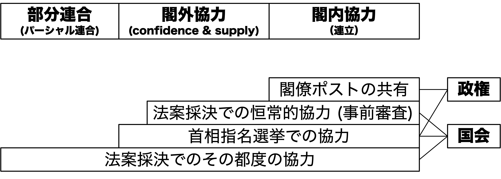
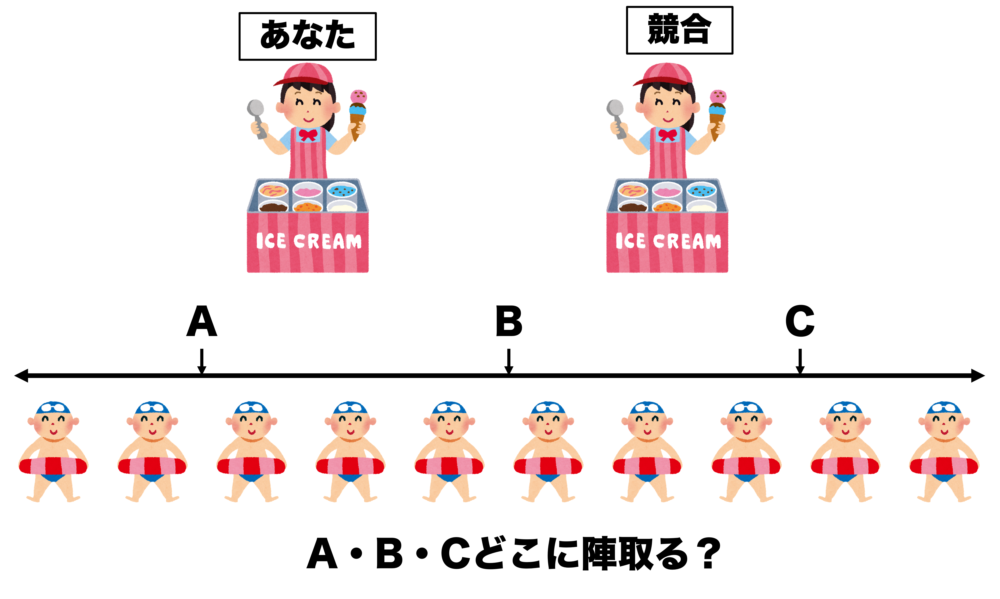
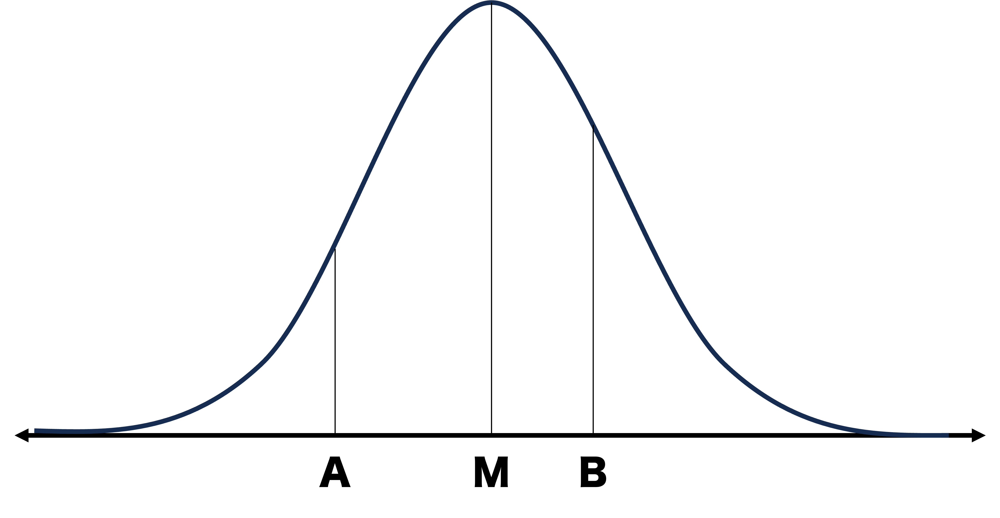
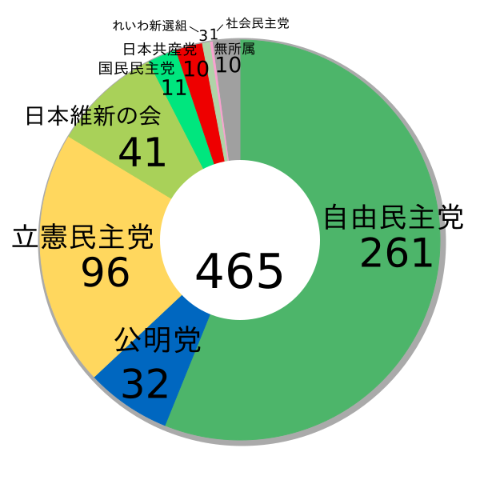

10/政党間競争と協力
政治過程論
2026-06-18
出席登録をお願いします

今日の目次
- はじめに
- 政党間競争と協力
- 中位投票者定理
- 連立政権のモデル
- 日本の連立政権
- まとめ
はじめに
先週のRPより
TBD
本日の目的と到達目標
目的
政党間の競争と協力についてミクロ的な視点から学ぶ。中位投票者理論から政党間競争を考察するのと並行して、選挙や議会などで行われる政党同士の協力のあり方を概観する。特に複数の政党による連立政権について、最小勝利連合理論と隣接最小勝利連合理論といった理論を学習し、日本の事例を通してその妥当性を検証する。
到達目標
- 政党同士の協力が行われる3つの場を列挙できる。
- 中位投票者定理の内容と問題点をそれぞれ説明できる。
- 連立政権形成に関する公職追求モデルの内容を説明できる。
- 連立政権形成に関する政策追求モデルの内容を説明できる。
- 日本の自公連立がなぜパズルであると言えるのか、3つの理由を列挙できる。
本日の授業の位置付け

政党間競争と協力
クイズ①
アメリカ、イタリア、ドイツ、日本の政党制はサルトーリの分類（一党優位政党制、二大政党制、穏健多党制、分極多党制）に基づくとそれぞれどれになるでしょうか。
正しいものを選んでください。
政党間競争と協力
復習：政党システム (party system)
政党同士の相互作用（競争と協調）の構造
- 一党優位政党制、二大政党制、穏健多党制、分極多党制
政党間競争
- 有権者の票、政府権力、政策実現をめぐる対立→中位投票者理論
政党間協力のレベル
- 選挙…候補者調整や他党候補者の支援・推薦
- 国会…法案や予算可決のための協力
- 政権…首相指名のための協力
- 引き換えの閣僚ポストと政策実現
国会・政権レベルでの協力

出典：中北（2019: 71）の2-①
中位投票者定理
海水浴場でアイスクリーム屋

WebClassアンケートで回答してください
中位投票者定理 (median voter theorem)
二大政党の政策選好は中位投票者の位置にまで収斂する
- 左右一次元上でちょうど真ん中の投票者
ダウンズがホテリングの空間理論を政党間競争に応用

中位投票者定理の前提
- 政策空間は一次元
- 実際には多次元化
- 有権者は自分に少しでも近い政党に投票
- cf. 近接性モデル
- 政党は得票の最大化を目指す
- cf. 公明党と日本共産党
- 2つの政党しか存在しない
- 第三党の存在は収斂をもたらさない
- 有権者は一次元政策空間上に単峰型に分布
- 実は必要のない前提
連立政権のモデル
連立政権 (coalition government)
複数の政党が参加する政権
- 対義語は「単独政権」
多党制の欧州では通常の形態
- ドイツの「信号連立」(Ampelkoalition; 2021-24)
- イタリアの「五党連立」 (Pentapartito; 1981-91)
連立政権を説明するモデル
- 公職追求モデル
- 政策追求モデル
公職追求モデル (office-seeking model)
各政党は公職（＝閣僚ポスト）の獲得を追求
最小勝利連合 (minimal winning coalition)
過半数を超えるのに最小限の議席を持つ政党で連立が成立
- ウィリアム・ライカーの提唱
- 過大連合→各党の閣僚数が減少
- 過半数を取れるギリギリの政党同士で連立
- A+B (65)
- A+C (20)
- A+D+E (55)
- B+C+D (55)
| 政党 | 議席数 |
|---|---|
| A | 40 |
| B | 25 |
| C | 20 |
| D | 10 |
| E | 5 |
| 計 | 100 |
クイズ②
| 政党 | 議席数 |
|---|---|
| 自民 | 40 |
| 維新 | 25 |
| 立憲 | 20 |
| 公明 | 10 |
| 共産 | 5 |
| 計 | 100 |
次の最小勝利連合のうち、最も「ありえない」のはどれ？
- 自民＋維新 (65)
- 自民＋立憲 (60)
- 自民＋公明＋共産 (55)
- 維新＋立憲＋公明 (55)
WebClassで回答してください
政策追求モデル (policy-seeking model)
各政党は公職の獲得だけでなく政策も追求
隣接最小勝利連合 (minimal connected winning coalition)
余計な政党を含まず、かつ政策的に隣の政党同士で連合
- ロバート・アクセルロッドの提唱
日本の連立政権
日本の連立政権史
| 時期 | 政権構成 | 備考 |
|---|---|---|
| 1955-93 | 自民党単独 | いわゆる55年体制；中曽根内閣の例外（新自由クラブ） |
| 1993-94 | 非自民・非共産連立 | 細川→羽田内閣；初の自民党下野 |
| 1994-98 | 自社さ連立 | 村山（社会党）→橋本（自民党）内閣 |
| 1998-2009 | 自自公→自公保→自公連立 | 小渕内閣で公明参加；小沢自由党→保守党→自民党に合流（03年） |
| 2009-12 | 民国社→民国連立 | いわゆる民主党政権；社民党は10年に離脱 |
| 2012-26 | 自公連立 | 第二次安倍→石破内閣；自公協力は野党時代も継続 |
| 2026- | 自維連立 | 厳密には閣外協力（維新は補佐官のみ） |
自公連立
自民党と公明党の連立政権
- 長期間にわたり安定して存続（合計26年）
- 緊密な選挙協力と政策調整
連立モデルで説明できない謎
- 過大連合…自民は単独政権可能
- 公明ポストの少なさ
- 基本的には国交大臣のみ
- 政策距離が小さくない
- 改憲の自民と護憲の公明
- 2015年安保法制の動揺

Think-pair-share (-10分)
このように従来の連立政権モデルからは説明できない自公政権ですが、なぜ長きにわたり存在し続けたのでしょうか。
今回の事前学習課題（中北2019）にはどのようなことが書かれていたか、隣と相談してもいいので見つけてみてください。
WebClassチャットで共有
制度論的説明
制度構造が自公に連立を組む誘因（インセンティブ）
- 委員会中心主義…実質的審議は委員会
- 単なる過半数では円滑審議に不十分
- 委員長ポストと各委員会での過半数
- 安定多数、絶対安定多数
- 二院制…権限の強い参議院が存在
- 参院は比例性の高い選挙制度→多党化
- 単独では過半数が取りにくい
- 選挙制度…衆参とも混合制
- 多数代表部分での共倒れ抑止→選挙協力
- 引き換えに比例代表部分での融通
まとめ
本日の目的と到達目標
目的
政党間の競争と協力についてミクロ的な視点から学ぶ。中位投票者理論から政党間競争を考察するのと並行して、選挙や議会などで行われる政党同士の協力のあり方を概観する。特に複数の政党による連立政権について、最小勝利連合理論と隣接最小勝利連合理論といった理論を学習し、日本の事例を通してその妥当性を検証する。
到達目標
- 政党同士の協力が行われる3つの場を列挙できる。
- 中位投票者定理の内容と問題点をそれぞれ説明できる。
- 連立政権形成に関する公職追求モデルの内容を説明できる。
- 連立政権形成に関する政策追求モデルの内容を説明できる。
- 日本の自公連立がなぜパズルであると言えるのか、3つの理由を列挙できる。
次回までに
事後学習
- 授業資料を見直し、目標到達をセルフチェック
- WebClass上でのリアクションペーパー入力（日曜日まで）
- 【任意】中北の自公政権崩壊に関する論考を読む。
事前学習
- 教科書（II-1〜2）を読む。

政党間競争と協力